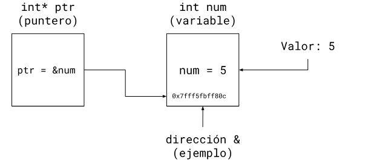
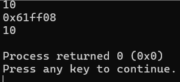
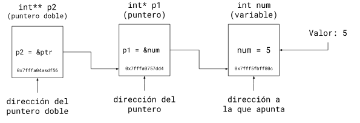

lección 11
punteros
Las variables de C++ son más que solo su valor, se declaran con un identificador y tienen una dirección en la memoria. Al usar una variable, estás accediendo a la dirección donde su valor se almacena.
Del mismo modo, las direcciones de memoria se pueden guardar en punteros. Los punteros guardan la dirección de memoria de una variable para dirigirse a ella cuando se use. Observa el diagrama:

Si intentas ver que hay en un puntero usando cout, verás la dirección de memoria que este guarda, observa las diferentes salidas:
#include <iostream>
using namespace std;
int main(){
int n = 10;
int* ptr = &n;
cout << n << '\n';
cout << ptr << '\n';
cout << *ptr << '\n';
return 0;
}

Primero, se muestra el valor de n, que es 10; después, ptr nos mostró dónde se almacena n; y finalmente, *ptr apunta al valor alojado en la dirección, que vuelve a ser 10; esto se llama desreferenciar.
- Para punteros *
- Para direcciones &
También, es importante diferenciar la dirección que guarda un puntero a la dirección propia del mismo, de la siguiente manera:

Los punteros tienen su dirección propia, por lo tanto, puede ser apuntada hacia ella por otros punteros, llamados punteros dobles.
Los punteros pueden ser declarados sin ninguna dirección que apuntar, pero esto lleva a comportamiento indeterminado o errores de segmentación. Como alternativa, se pueden declarar punteros vacíos con el valor nullptr, de la siguiente manera:
#include <iostream>
using namespace std;
int main(){
//puntero sin valor, indeterminado
int* ptr1;
//puntero nulo, valor 0
int* ptr2 = nullptr;//puntero nulo, valor 0
return 0;
}
Los punteros estrictamente tienen un tipo de dato al cual apuntar, a menos que se usen punteros void.
Punteros void
Los punteros void pueden almacenar la dirección de cualquier tipo de dato, sin importar si le cambian la dirección. Siempre y cuando hagas la conversión al momento de desreferenciar dicho puntero, usando static_cast<>():
#include <iostream>
using namespace std;
int main(){
int n = 10;
string s = “algoritmo”;
void* ptr = &n;
//notar el cambio en el tipo de dato
ptr = &s;
cout << *(static_cast<int*>(ptr));
return 0;
}